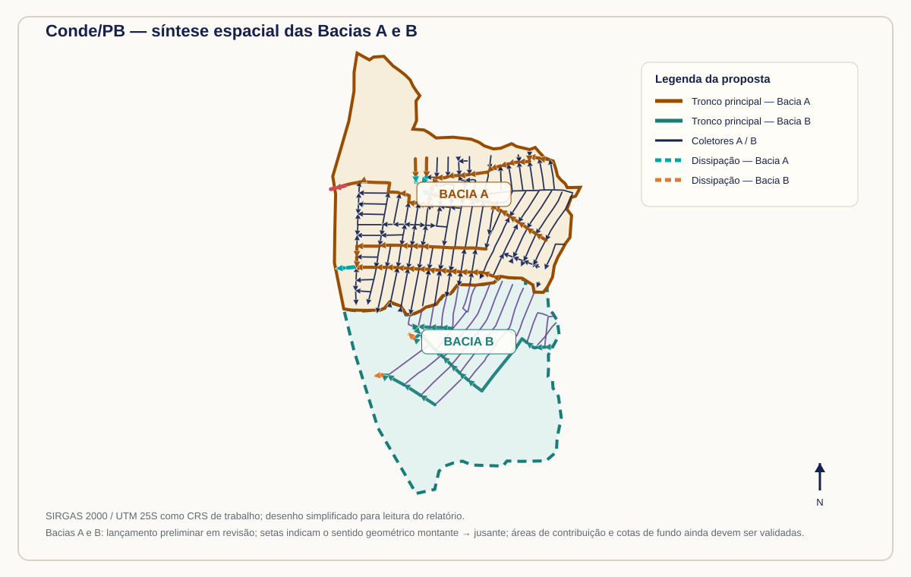

Da Reconstrução à Prevenção Resiliente: Estudo de Caso sobre Drenagem Urbana adaptada à Mudança Climática em Conde/PB
Subsídios técnicos para o Plano de Trabalho de Reconstrução nas Bacias A e B
Baixe a versão integral em PDF para compartilhar ou arquivar.
Resumo executivo
Este documento organiza uma concepção preliminar de drenagem urbana para duas sub-bacias urbanas no município de Conde/PB, destinada a instruir o Plano de Trabalho de Reconstrução do município. A proposta combina diagnóstico territorial, MDT híbrido, lançamento georreferenciado da rede, modelagem hidrológica e hidráulica preliminar no modelo SWMM e análise de adaptação climática.
O escopo não é implantar toda a rede municipal nesta etapa. A prioridade é identificar, em cada bacia, os troncos principais, coletores indispensáveis, dissipadores e saídas que reduzam processos erosivos, alagamentos e transferência de risco para jusante. A seleção final das metas depende da validação de campo, das áreas contribuintes, das cotas, das condições de jusante e dos resultados hidráulicos.
O princípio orientador é reconstruir melhor: as intervenções devem reduzir a vulnerabilidade existente, permitir manutenção e permanecer compatíveis com cenários de mudança climática. A análise de suscetibilidade à erosão, os pontos originalmente registrados e o cruzamento espacial das metas estão detalhados no Capítulo 1 — Introdução e contextualização.
Painel espacial das Bacias A e B

A figura acima é a versão estática para impressão e PDF. A representação é cartográfica, não substitui a conferência no ArcMap/QGIS; o CRS de trabalho permanece SIRGAS 2000 / UTM 25S.
Mapa interativo das Bacias A e B
Use os botões + e −, a roda do mouse ou o gesto de pinça para aproximar e afastar. Arraste o mapa para percorrer a área e use o controle de camadas para alternar entre o mapa de satélite e o mapa de ruas, mantendo as poligonais das Bacias A e B e os elementos da rede sobrepostos.
Versão interativa: alterne entre Satélite Esri e Ruas OpenStreetMap; ligue ou desligue Bacias A/B, redes, nós e dissipadores. Clique nos trechos para consultar seus códigos e parâmetros preliminares. As imagens de satélite e ruas são referências de visualização e não substituem o ortomosaico, o cadastro ou o levantamento de campo.
Situação da rede proposta e dos trechos do Plano de Trabalho
| Unidade | Rede proposta nesta etapa | Trechos contemplados no Plano de Trabalho |
|---|---|---|
| Bacia A | Troncos principais, coletores indispensáveis, áreas de contribuição e dissipadores/saídas associados aos setores críticos | Trechos desenhados nas camadas TroncoA*.shp, ColetorA*.shp e TrechosDissipacao.shp, após validação de continuidade, vazão e jusante.Os dados dos trechos podem ser baixados no painel Anexo A — Dados para download. |
| Bacia B | 3 troncos, 20 coletores, 2 dissipadores, nós e áreas template lançados sobre o MDT híbrido | Trechos prioritários a definir depois da validação das ocorrências, caminhos de fluxo, vazões e dissipadores. Os dados dos trechos podem ser baixados no painel Anexo A — Dados para download. |
O relatório não apresentará a implantação de toda a rede municipal como meta imediata. A proposta é selecionar, em cada bacia, os troncos principais e dissipadores mais críticos, acrescentando apenas os coletores necessários para que esses trechos funcionem como sistema e possam ser verificados no SWMM. As Bacias A e B já possuem lançamentos preliminares; a definição das metas executivas seguirá a validação de continuidade, contribuição, vazão, condições de jusante e desempenho hidráulico.
Números da versão preliminar
Como ler este projeto
Relatório completo em PDF
O PDF completo do relatório reúne a minuta técnica, a metodologia do MDT híbrido, a situação das Bacias A e B, a rede/SWMM, a hidrologia, o plano de trabalho e o catálogo de dados. O arquivo será atualizado junto com cada versão publicada do relatório digital.
Padrão editorial inspirado nos projetos DPM/SEDEC de documentação versionada no GitHub Pages e na identidade visual SEDEC do ICPM.